require(tidyverse)
require(TropFishR)
require(magrittr)
require(LBSPR)
require(hrbrthemes)
require(patchwork)
require(sf)
options(digits = 3)19 Length Based Spawning Potential Ratio
19.1 Introduction
Overall purpose of fisheries science is to provide decision-markers with advice on the relative merits of alternative management (Bradley et al. 2019). Fisheries managers recognize that stock assessments of species that have poor data (quality is poor) or are data poor (data are limited in quantity) are very challenging. Because of this dual limitations, assessments of the status of exploited fish stock are often highly uncertain. However, to achieve an effective fisheries management require a better understanding of life history information of fishery stock (Golden et al. 2016; Jackson et al. 2001). According to Bown, Gray, and Stead (2013), fisheries management is a complex socio-political process, and there is no silver bullet to improve global fisheries. Yet understanding the population biology of fish species is essential to meet one of the main objective of fishery science of maximizing yield to fisheries, while safeguarding the long-term viability of populations and ecosystem (Pope et al. 2000).
Rapidly global population growth (Goetz 2019; Ahmadi et al. 2020) and changing ocean conditions (Board, Council, et al. 2010) caused by climate change and natural variability have posed a threat on fishery resources (Bradley et al. 2019). This challenges demands fisheries an adjust of biological reference points (Hilborn et al. 2020). However, to address growing uncertainty about stock status, requires more precise data collection of high resolution spatial and temporal fisheries data (Punt et al. 2021). But, the ecological characteristics of fished stocks make data collection difficult. The relative invisibility in the oceans, wide distribution and mobility across jurisdictional boundaries, and complex interactions within marine ecosystems and the physical environment has made collection of fishery data time-consuming and expensive.
A key element to determine stock status is to estimate or specify reference points that serve as baselines against which current stock size estimates are compared. The two widely used reference points to assess and manage fish stocks are stock size and exploitation. While a stock size reference point determines whether the stock is in an over-fished, an exploitation reference point identifies whether over-fishing is taking place. Stock status and reference points are most often derived from stock assessments that requires certain minimum information on the biology, catch or effort, and measures of relative abundance of the stock from fishery data. In developing countries, fishery data are especially poor and basic biological studies are limited because of low financial capital allocated to capacity infrastructure and scientific training to collect, analyse and interpret fishery data.
The past decade has seen an advancement and emergence of several data-poor methods (Punt, Smith, and Smith 2011; Jiao et al. 2011; Dick and MacCall 2011). However, the International Council for the Exploration of the Seas (ICES) identified and discussed the use of length-based methods for assessing stock of data-poor fishery (Shen et al., n.d.). Other method include catch-only and catch-based methods. Many of these size-based techniques were developed to estimate the growth and mortality rates of fish without the need for expensive and difficult to obtain age data. Recently, Hordyk (2019) developed a model capable to estimate stock status of exploited fishery from a data-poor. The model suits small-scale and data-poor fisheries like the kawakawa fishery in coastal waters of Tanzania. Unlike the industrial fishery, data for small-scale fishery is often restricted by lack of technical expertise and expense. However, measurement of length composition data of an exploited stock are economically cheap and simple to collect for small-scale fisheries (Quinn and Deriso, 1999).
In this study, we used a Kawakawa (Euthynnus affinis) as an example to demonstrate the advantages of using length-based model in assessing the stock status of data-poor species. Kawakawa is an epipelagic migratory tuna species that is widely distributed in the tropical and subtropical waters of the Indo-Pacific region. In the Indian Ocean, this species extends from South Africa (Smith and Heemstra, 1986), along the coasts of east Africa, Arabian Peninsula, the Indian sub-continent, and Malaysian Peninsula. It is also found in the Red Sea, Persian Gulf, and off islands in the Indian Ocean, including Madagascar, Comoros Islands, Mauritius, Reunion, Seychelles, Lakshadweep, Andaman Islands, Nicobar Islands, Sri Lanka, and Maldives (Boettiger, Temple Lang, and Wainwright 2012). In Tanzania, this species is mostly caught in the neritic waters. Kawakawa is also a merit species and is most commonly seen in the ringnet catches, although few of individual are caught by hand-line, longline and small purse seine.
As important as this modeling is to science-based management, no published application of SPR models exists for kawakawa from the Pemba Channel. Our study aimed to use the length-based method to determine reference points and estimate the stock of of Kawakawa in neritic waters of Tanzania. To help achieve this goal, several objectives were defined. The first objective was to determine the length at first maturity of kawakawa individuals and test whether the length of maturity is different from the median fork length of species. The second objective was to establish biological and exploitation reference points from data-poor kawakawa fishery using traditional methods. The third objective was to use the estimated biological and exploitation reference points to simulate across the range of life histories, based on relationships between length of capture and length at maturity to estimate the stock of kawakawa in the Pemba channel.
19.1.1 Estimate the Stock
We used the Length-Based Spawning Potential Ratio (LBSPR) model to assess the stock status based on length frequency data of Kawakawa in the territorial water. The LBSPR was chosen for this analysis because is able to estimate fisheries stock from limited data— a situation where few data are available. The LBSPR models are equilibrium based, and assume that the length composition data is representative of the exploited population at steady state. Because of limited data, LBSPR was deploy to first to simulate the expected length composition and growth curve. These parameters are then fitted to the model with the empirical length frequency data to estimate relative apical fishing mortality and spawning potential ratio of kawakawa.
19.1.2 Length frequency
The raw raw length measurements were first converted to length frequency and summarized the length-frequency matrix data into one column per year. This structure of LFQ data is needed when catch data is converted to growth. Then length frequency data set was restructured according to a list of steps to emphasize cohorts in the data. The steps can be found in various publications, see Brey and Pauly (1986) or Pauly (1981). Here, the steps documented in Gayanilo and Pauly (1997) are used.
19.1.3 Recruitment
Recruitment patterns of a stock was computed by backward projection onto the length axis of a set of length frequency data using the von Bertallanfy growth curve (Pauly 1982). The method assumes that (i) all individual fish in a data set grow as described by a single set of growth parameters and (ii) one month out of twelve always has zero recruitment. The second assumption is probably not met, since temperate species may contain more than one month with zero recruitment, while tropical species may have more constant recruitment without months of no recruitment.
Although the default setting provided a reliable recruitment, however, the time lag between peak spawning and recruitment made the 0.25 tsample inaccurate to estimate the recruitment period of Kawakawa because it contains matrix of sampling dates. Therefore, to have a vector of date of each sampling data, the date were converted to fraction date by extracting the day of the year of sampling date and divide by 365.25
19.1.4 Cohort identification
We identified kawakawa cohorts by means of length-frequency histograms analyses. Length-frequency histograms were created for each sampling months from size data for 1,866 observation based on class intervals of 2.0cm fork length. From the length-frequency histograms, we used the modal progression routine of FiSAT to identify potential cohorts. Modes were accepted as distinct cohorts only when differentiated by a separation index above the critical value of 2 and validated with growth curves. One-sample Wilcoxon tests were used to confirm the goodness of fit of observed and predicted length frequencies and detect departures from normality of the observed length-frequency distributions (R Core Team 2020).
19.2 Derivation of reference points
19.2.1 Estimate size at first maturity
Size at first maturity (\(L_{50}\)) describe the length at which 50 percent of the individuals fish caught are adults or with mature gonads. The size at 50% maturity (\(L_{50}\)) was estimated as the length at which a randomly chosen specimen has a 50% chance of being mature (Torrejon-Magallanes 2020). We used a morphometric instead of gonado somatic technique to estimate \(L_{50}\) of Kawakawa because is robust in assessing the stock using the length-based-spawning potential ratio (LBSPR). In the regression analysis, the fork length is denoted as the explanatory variable and the classification of maturity (juveniles versus adults) is considered the response variable (binomial). The variables are fitted to a logit function in equation below:
\[ P_{CS} = \frac{1}{1+e^{-(\hat{\beta}_{0} + \hat{\beta}_{1}\times X)}} \]
where PCS is the probability of an individual of being mature at a determinate X length. \(\beta_{0}\) (intercept) and \(\beta_{1}\) (slope) are parameters estimated. The L_50_ is calculated in equation below:
\[ L_{50} = -\frac{\hat{\beta}_{0}}{\hat{\beta}_{1}} \]
19.2.2 Catch Converted Curve
Life history parameters were determined from growth parameters (length asymptotic and growth coefficient), mortality and size at first maturity. Total mortality was estimated using the length–converted catch curve model. The selectivity parameters were estimated by the length-converted catch curve analysis with simultaneous estimation of the selection ogive. The construction of the catch curves requires information about growth parameters to estimate the relative age of the individuals. Here, growth parameters (\(L_\infty\) and \(K\)) of the von Bertlanffy growth equation (VBGE) were computed. Based on the growth parameters, the instantaneous natural mortality rate (\(M\)) were approximated by means of the empirical formula in equation below:
\[ M = 4.118K^{0.73} L_{\infty}-0.33 \]
where K and L∞ are the growth parameters of the VBGE. By subtraction of \(M\) from \(Z\), an estimate of the instantaneous fishing mortality rate (F) was estimated and an indicator of the exploitation rate was estimated as (\(E = \frac{F}{Z}\)).
A Powell-Wetherall method was used to estimate the instantaneous total mortality rate (\(Z\)) and the infinite length (\(L_\infty\)) of the von Bertalanffy growth equation (Powell 1979; Wetherall, Polovina, and Ralston 1987). The Electronic LEngth Frequency ANalysis (ELEFAN) method was used to fitting the best growth curve, which allows the fitted curve through the maximum number of peaks of the length frequency distribution.With the aid of the best growth curve, the growth constant and asymptotic length (\(L_{\infty}\)) were estimated. The von Bertalanffy growth equation was defined in equation below;
\[ L_t = L_{\infty} [1-exp (-K(t-t_0))] \]
Where \(L_t\) is length at time \(t\), \(L_\infty\), the asymptotic length, \(K\), the growth coefficient and \(t_0\), is the hypothetical time at which length is equal to zero. The \(t_0\) value estimated using the empirical equation below;
\[ Log_{10}(-t_0) = -0.3922 - 0.2752 \times Log_{10}\times L_\infty - 1.038 \times Log_10 \times K \]
19.3 Data Analysis and Packages
We used R–a language and environment for statistical computing version 4.5 (R Core Team 2020) to process, analyse, and visualize, plots and maps. Wilcoxon test was used to test whether the length at maturity was significant difference from the median fork length of kawakawa. Several packages were used to perform create length frequency, compute biological references points and estimate exploitation parameters, which are TropFishR (Mildenberger, Taylor, and Wolff 2017), sizeMat (Torrejon-Magallanes 2020) and LBSPR (Hordyk 2019) packages. Other packages used for data management and analytic tasks includes readr (Wickham and Hester 2020) package for reading comma–separated files, readxl for Excel spreadsheets (Wickham and Bryan 2019), and ncdf4 (Pierce 2019) for importing satellite data stored in NECDF file format and sf (Pebesma 2018) package for loading shapefile and simple feature files.
Other packages include lubridate (Grolemund and Wickham 2011) for dealing with date and group observations to monsoon seasons, wior package Semba and Peter (2020) was used to detect outlier observations from the datasets, dplyr (Wickham et al. 2021) for manipulating data, and tidyr (Wickham 2021) for organizing the file into a consistent format for subsequent analysis and mapping. The results from the analysis were summarized and presented in tables with knitr (Xie 2014) and kableExtra (Zhu 2021) packages while plotting and mapping was made with the ggplot2 (Wickham 2016), and ggstatsplot (Patil 2021) and metR (Campitelli 2021) packages. patchwork (Pedersen 2020) was used to combine plots and export them in both PDF and PNG formats. The bookdown (Xie 2016) and rmarkdown (Xie, Dervieux, and Riederer 2020) packages were used to typeset and compile LATEX document of the manuscript an knit with knitr package (Xie 2014) to various format including PDF, tex and word. The script file that can be used to reproduce the analysis and plotting figures used in this study can be accessed from this github link.
19.4 DSFA neritic data
neritic = read_csv("d:/semba/dsfa_fumba/length_weight_neritic.csv") %>% janitor::clean_names()
neritic = neritic %>%
mutate(fishing_date = lubridate::mdy(fishing_date)) %>%
rename(fl = focul_length, wt = uzito, species =aina_ya_tuna_walioteuliwa,
gear = aina_ya_mtego) %>%
mutate(species = if_else(species == "Sehewa (Kawakawa)", "Kawakawa",species))
neritic %>%
group_by(kijiji) %>% count(sort = TRUE)# A tibble: 11 x 2
# Groups: kijiji [11]
kijiji n
<chr> <int>
1 Shangani East 4135
2 Halmashauri 3808
3 Nungwi 2429
4 Wete 1299
5 Magengeni 541
6 Kunduchi Pwani 239
7 Kilindoni 135
8 Jimbiza 19
9 Bweni 5
10 Other 3
11 Tumbuju 219.5 L50
kawa = neritic %>%
filter(species == "Kawakawa" & wt < 5 & fl > 31 & fl < 80 & kijiji %in% c("Halmashauri", "Shangani East"))
classify = kawa %>%
sizeMat::classify_mature(varNames = c("fl", "wt"), varSex = NULL, method = "qd", selectSex = NULL) all individuals were used in the analysis classify %>% plot()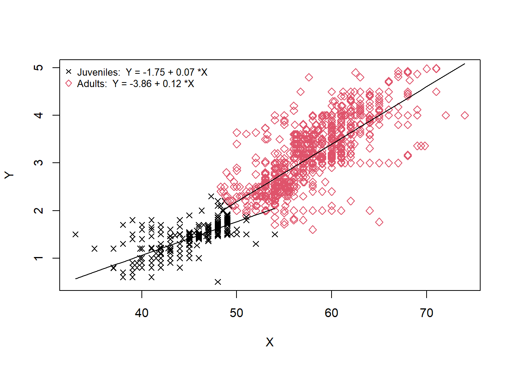
# classify
## convert classify dataset to tibble/dataframe
classifiy.tb = data.frame(
x = classify$x,
y = classify$y,
mature = classify$mature
) %>%
mutate(group = if_else(mature == 1, "Adult", "Juvenile"))
#%>% wior::outlier_remove(y) classifiy.tb %>%
bind_cols(kawa) %>%
mutate(month = lubridate::month(fishing_date, label = TRUE)) %>%
ggplot(aes(x = month, fill = group))+
geom_bar(position = position_dodge(preserve = "single"), width = 0.8)+
ggsci::scale_fill_lancet()+
theme(legend.position = c(.3,.85))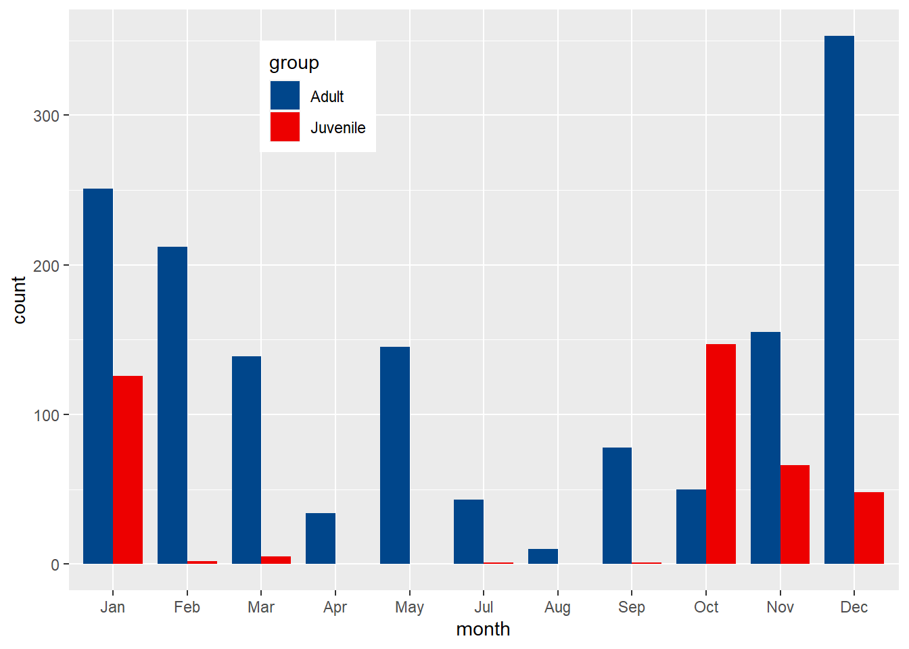
# Instead of relying on the base plot, we can exract the data and use the power of ggplot2 and its sister packages to make elegant plots
formula = y~x
## compute percentage of simulated avalue
percentage = classifiy.tb %>%
group_by(group) %>%
summarise(n = n()) %>%
mutate(percentage = round(n/sum(n)*100),2)
textual = data.frame(xa = 80,ya=6, group = NA, label = paste("Percentage of adult is", percentage$percentage[1], " and that of Juvenile is ", percentage$percentage[1]))
kaw.juv.adult = classifiy.tb %>%
ggplot(aes(x = x, y = y, color = group, fill = group, shape = group))+
geom_point(size = 2)+
geom_smooth(method = "lm", formula =formula, se = TRUE )+
scale_y_continuous(trans = scales::log10_trans(), breaks = scales::breaks_width(width = 1.5))+
scale_x_continuous(breaks = scales::breaks_width(width = 10), expand = c(0,0), limits = c(NA, 75))+
ggsci::scale_color_lancet()+
ggsci::scale_fill_lancet(alpha = .1) +
# ggpmisc::stat_poly_line(formula = formula) +
ggpmisc::stat_poly_eq(aes(label = stat(rr.label)),
formula = formula, label.x = .04, label.y = c(.82,.75))+
ggpmisc::stat_poly_eq(aes(label = stat(eq.label)),
formula = formula) +
theme_bw() +
theme(legend.title = element_blank(), legend.position = c(.75,.15),
legend.background = element_rect(fill = "white"),
panel.grid = element_blank())+
labs(x = "Fork length (cm)", y = "Weight (kg)")
kaw.juv.adult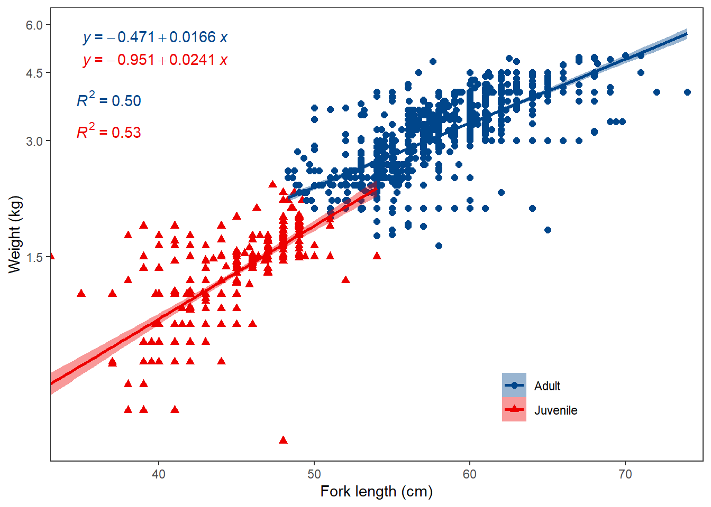
fit = classifiy.tb %$%
glm(y~x + group)
fit %>%
car::Anova(type = "III")Analysis of Deviance Table (Type III tests)
Response: y
LR Chisq Df Pr(>Chisq)
x 1931 1 < 2e-16 ***
group 50 1 1.5e-12 ***
---
Signif. codes: 0 '***' 0.001 '**' 0.01 '*' 0.05 '.' 0.1 ' ' 1fit %>%
ggstatsplot::ggcoefstats()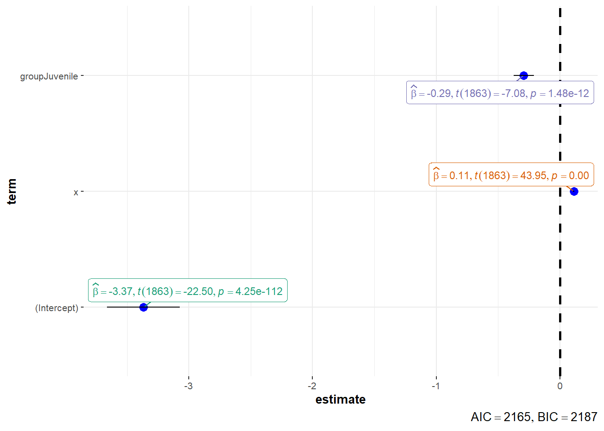
fit %>%
equatiomatic::extract_eq(
# operatorname,
var_colors = c(
x = "#ffa91f",
y = "#00d1ab"
),
greek_colors = c(
"black", "#3A21B3", "#58A1D9", "#FF7582", "black"
),
subscript_colors = c(
NA_character_, "#3A21B3", "#58A1D9", "#FF7582", NA_character_
),
wrap = TRUE,
terms_per_line = 3
)\[ \begin{aligned} E( \operatorname{y} ) &= {\color{black}{\alpha}} + {\color{#3A21B3}{\beta}}_{{\color{#3A21B3}{1}}}({\color{#ffa91f}{\operatorname{x}}}) + {\color{#58A1D9}{\beta}}_{{\color{#58A1D9}{2}}}(\operatorname{group}_{\operatorname{Juvenile}}) \end{aligned} \]
#### estimate maturity
myMature = classify%>%
sizeMat::morph_mature(method = "fq", niter = 100)
myMature%>%
print()formula: Y = 1/1+exp-(A + B*X) Original Bootstrap (Median)
A -81.3653 -83.1864
B 1.6349 1.6699
L50 49.7685 49.7425
R2 - 0.9481 #### PLot estimated morphomometric maturity
myMature %>%
plot(onlyOgive = TRUE)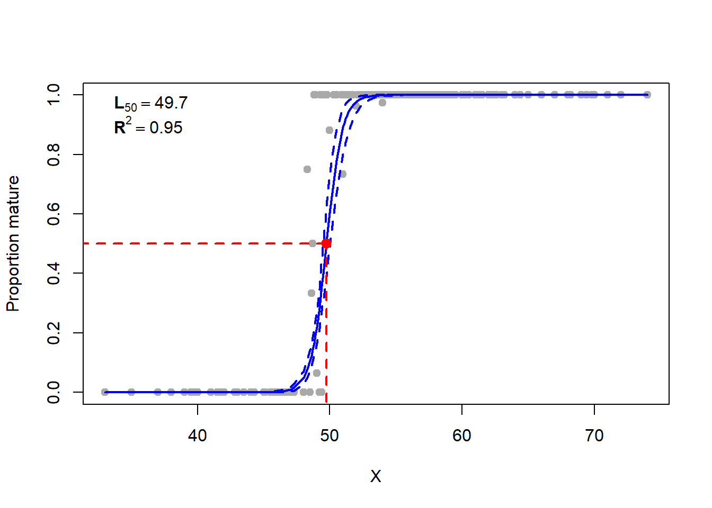
Size at morphometric maturity = 49.7
Confidence intervals = 49.5 - 50
Rsquare = 0.95l50 = 49.8
r2 = 0.95
xpos = 65
markx = tibble(x = 25, x1 = l50, y = 0.5,y1 = 0.5)
marky = tibble(x = l50, x1 = l50, y = 0,y1 = 0.5)
mystats = data.frame(x =c(xpos,xpos), y = c(0.9,.75),
variable = c("R2", "L50"), value = c(r2, l50)) %>%
mutate(label = glue::glue("*R*<sup>2</sup> = {round(value, 2)}")) %>%
add_row(x = xpos, y = 0.75, variable = "L50", value = l50,
label = glue::glue("*L*<sub>50</sub> = {round(value, 2)}")) %>%
slice(-2)
kaw.morpho = myMature$out %>%
ggplot(aes(x = x))+
geom_line(aes(y = fitted), color = "black")+
geom_segment(data = markx, aes(x = x, y = y, xend = x1, yend = y1), linetype = 2, color = "red")+
geom_segment(data = marky, aes(x = x, y = y, xend = x1, yend = y1), linetype = 2, color = "red")+
theme_bw()+
theme(panel.grid = element_blank())+
# coord_cartesian(expand = FALSE)+
labs(x = "Fork length (cm)", y = "Maturity")+
scale_y_continuous(labels = scales::percent_format())+
scale_x_continuous(breaks = scales::breaks_width(width = 10), expand = c(0,0), limits = c(NA, 85))+
annotate(geom = "point", x = l50, y = .5, size = 2.2)+
ggtext::geom_richtext(data = mystats, aes(x = x, y = y, label = label))
kaw.morpho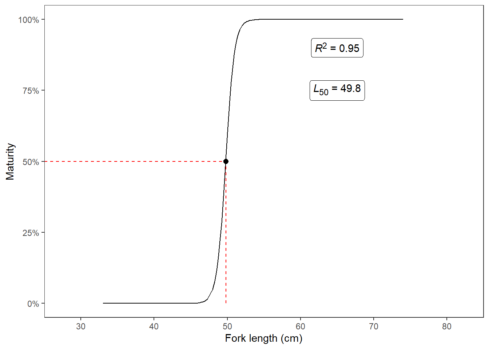
median(kawa$fl)[1] 57kaw.hist = kawa %>%
# wior::outlier_remove(fl) %>%
# select(fl, maturity_stage) %>%
ggstatsplot::gghistostats(x = fl,
test.value = myMature$L50_boot %>% median(),
type = "n",
bf.message = FALSE,
# normal.curve = TRUE,
binwidth = 1) +
geom_vline(xintercept = myMature$L50_boot %>% median(), linetype = 2, color = "red", size = 1.2)+
theme_bw()+
theme(panel.grid.minor = element_blank())+
coord_cartesian(expand = FALSE)+
labs(x = "Fork length (cm)")+
scale_x_continuous(breaks = scales::breaks_width(width = 10))
kaw.hist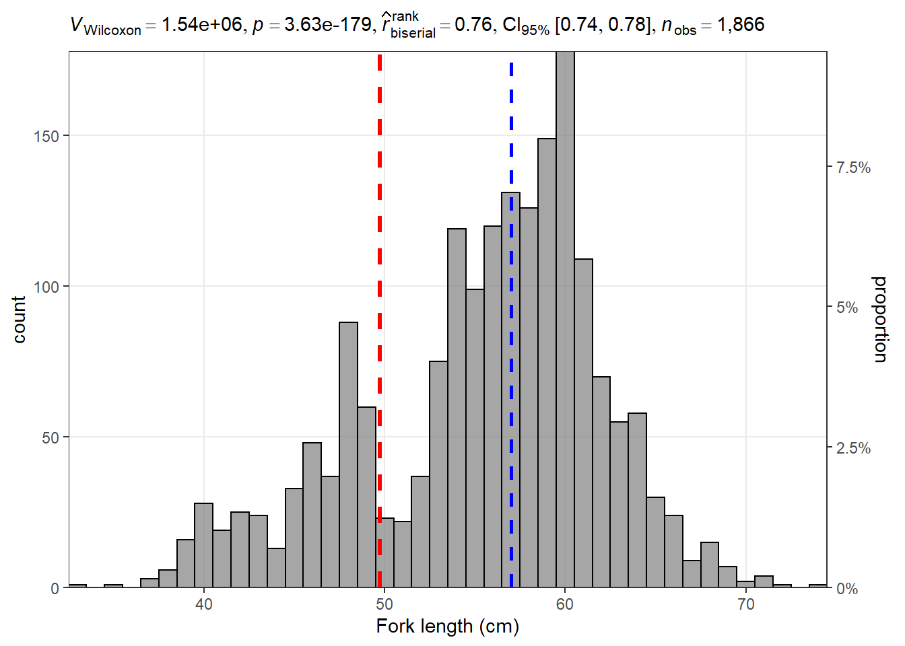
19.6 Length frequency
Convert raw length measurements to length frequency data (lfq class).
Modify length-freqeuncy (LFQ) data. Allows to summarise catch matrix of LFQ data to one column per year. This is required for e.g. catchCurve. Allows to change bin size of LFQ data. Allows to ad plus group to catch matrix.
Then length frequency data set was restructured according to a list of steps to emphasise cohorts in the data. The steps can be found in various publications, see Brey and Pauly (1986) or Pauly (1981). Here, the steps documented in Gayanilo and Pauly (1997) are used.
kawa.lfq = kawa %>%
TropFishR::lfqCreate(Lname = "fl", Dname = "fishing_date",
bin_size = 1, species = "Kawakawa", Lmin = 31,
length_unit = "cm", aggregate_dates = TRUE)
kaw.mod = kawa.lfq %>%
TropFishR::lfqModify(bin_size = 2, aggregate = "quarter", vectorise_catch = FALSE) %>%
TropFishR::lfqRestructure(MA = 11, addl.sqrt = FALSE)par(mfrow = c(2,1))
kaw.mod %>%
plot(Fname = "catch", las = 1, ylim = c(35,75))
kaw.mod %>%
plot(Fname = "rcounts", las = 1, ylim = c(35,75))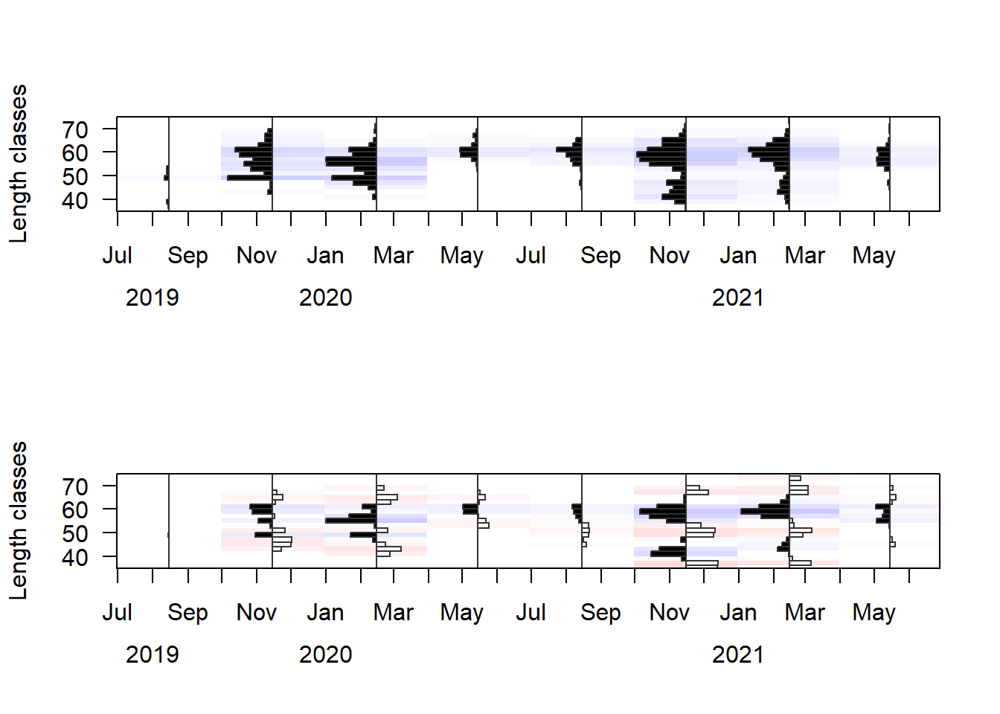
19.7 Powell-Wetherall method
A method to estimate the instantaneous total mortality rate (Z) and the infinite length of the von Bertalanffy growth equation (Powell 1979).
res_PW <- powell_wetherall(param = kaw.mod,
catch_columns = 1:ncol(kaw.mod$catch),
reg_int = c(1,14))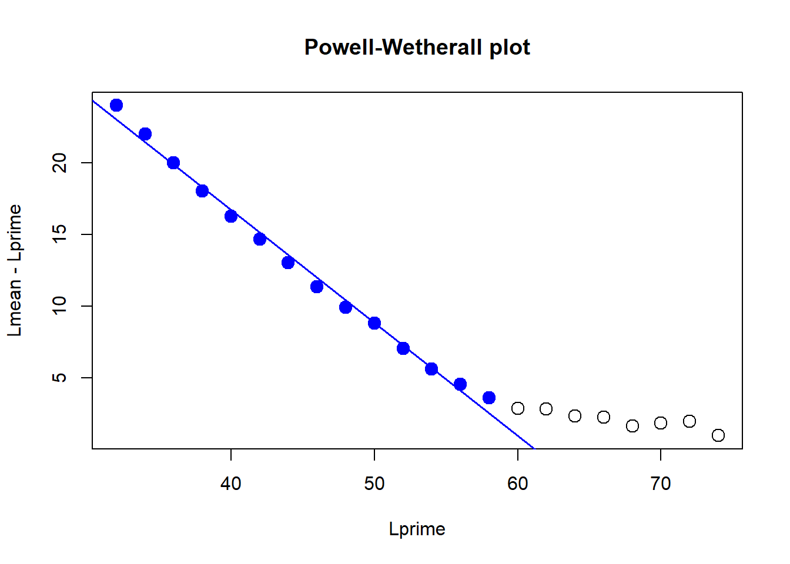
# show results
paste0("Linf =",round(res_PW$Linf_est,2), "±", round(res_PW$se_Linf))[1] "Linf =61.25±3"19.8 ELEFAN
Electronic LEngth Frequency ANalysis for estimating growth parameter. This functions allows to perform the K-Scan and Response surface analysis to estimate growth parameters. It combines the step of restructuring length-frequency data (lfqRestructure) followed by the fitting of VBGF curves through the restructured data (lfqFitCurves). K-Scan is a method used to search for the K parameter with the best fit while keeping the Linf fixed. In contrast, with response surface analysis both parameters are estimated and the fits are displayed in a heatmap.
# ELEFAN with K-Scan
res_KScan <- ELEFAN(kaw.mod, Linf_fix = res_PW$Linf_est,
MA=5, addl.sqrt = TRUE, hide.progressbar = TRUE)Optimisation procuedure of ELEFAN is running.
This will take some time.
The process bar will inform you about the process of the calculations.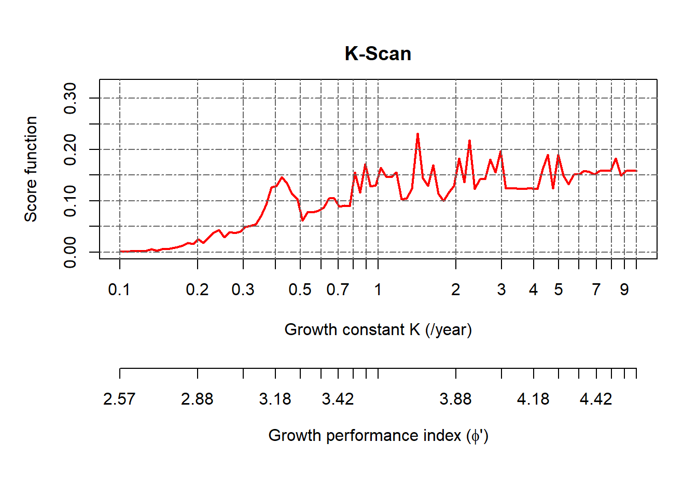
# show results
res_KScan$par; res_KScan$Rn_max$Linf
[1] 61.3
$K
[1] 1.42
$t_anchor
[1] 0.0563
$C
[1] 0
$ts
[1] 0
$phiL
[1] 3.73[1] 0.231par(mfrow = c(2,1))
kaw.mod %>%
plot(Fname = "catch", las = 1, ylim = c(35,75))
lt <- kaw.mod %>%
TropFishR::lfqFitCurves(par = list(Linf=61.25, K=1.42, t_anchor=0.056, C=0.5, ts=0),
draw = TRUE, col = "red", lty = 3, lwd=1.5)
kaw.mod %>%
plot(Fname = "rcounts", las = 1, ylim = c(35,75))
lt <- kaw.mod %>%
TropFishR::lfqFitCurves(par = list(Linf=61.25, K=1.42, t_anchor=0.056, C=0.5, ts=0),
draw = TRUE, col = "red", lty = 3, lwd=1.5)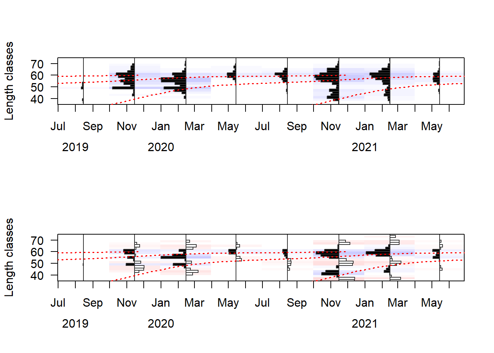
# this figure was exported in console with a title lfq_cohort.pdf19.9 catch-converted
ab = kaw.mod %>%
TropFishR::lfqModify(vectorise_catch = TRUE,
# plus_group = 67,
bin_size =4,
# minDate = as.Date("2020-06-30"),
# maxDate = as.Date("2020-12-31"),
year = 2020)
ab$Linf = 61.25
ab$K = 1.42
catch.converted = ab %>%
TropFishR::catchCurve(reg_int = c(0,68),
calc_ogive = TRUE,
# cumulative = TRUE,
auto = TRUE,
plot = TRUE)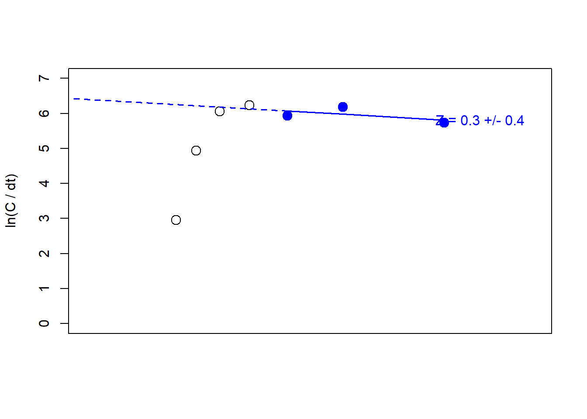
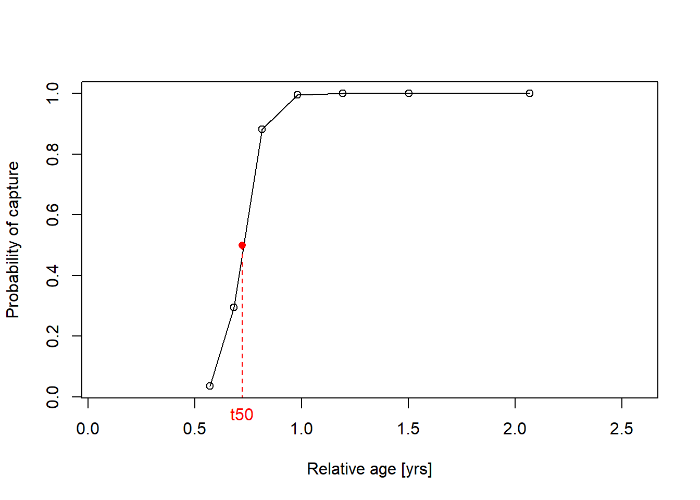
catch.converted$FNULL19.10 Recruitment
This function calculates recruitment patterns of a stock by backward projection onto the length axis of a set of length frequency data using the (special, generalised or seasonalised) von Bertallanfy growth curve (Pauly 1982). The method assumes that (i) all fish in a data set grow as described by a single set of growth parameters and (ii) one month out of twelve always has zero recruitment. The second assumption is probably not met, since temperate species may contain more than one month with zero recruitment, while tropical species may have more constant recruitment without months of no recruitment. If t0 is not provided, a relative recruitment pattern will be estimated without specific month values returned in the results. However, an estimate of t0 can be obtained by the time lag between peak spawning and recruitment. Several length-frequency data sets can be used to estimate the recrutiment pattern by providing catch as a matrix and setting catch_column to NA (default). Then the fraction per time is calculated for each size class in each sample and then pooled together. For the generalised vBGF, D is required, for the seasonalised vBGF C, ts and D.
catch.converted %>%
recruitment(tsample = 0.25, plot = TRUE)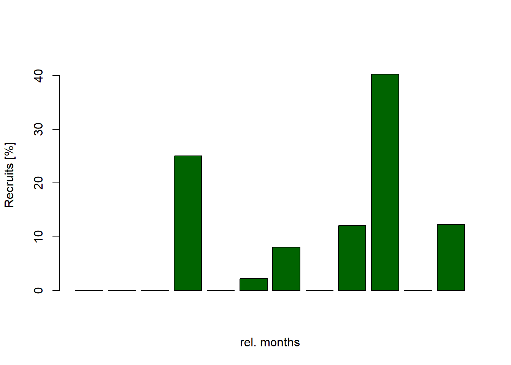
If no t0 is provided only relative recruitment pattern can be estimated.$species
[1] "Kawakawa"
$stock
[1] NA
$dates
[1] "2020-01-01"
$midLengths
[1] 34 38 42 46 50 54 58 62 66 70
$catch
[1] 2 17 63 94 96 193 314 222 67 14
$comment
[1] ""
$rcounts
X2019.08.15 X2019.11.15 X2020.02.15 X2020.05.15 X2020.08.15 X2020.11.15
V1 0.00000 0.0000 0.0000 0.0000 0.00000 -0.8194
V2 0.00000 0.0000 0.0000 0.0000 0.00000 -0.8468
V3 0.00108 0.0000 0.0000 0.0000 0.00000 -0.8727
V4 0.00337 0.0000 0.0000 0.0000 0.00000 0.1036
V5 0.00000 0.0000 -0.3684 0.0000 0.00000 0.9354
V6 0.00000 -0.2288 -0.6595 0.0000 0.00000 0.7009
V7 0.00000 -0.4853 -0.2477 0.0000 -0.11889 -0.0016
V8 0.00000 -0.5031 0.0941 0.0000 -0.04782 0.1357
V9 0.01158 0.4732 0.7015 0.0000 -0.18403 -0.7371
V10 0.00216 -0.3383 -0.3056 0.0000 -0.19768 -0.7894
V11 0.00216 0.0633 0.0641 -0.2905 -0.18070 -0.4138
V12 0.00000 0.3884 1.3428 -0.2169 0.07256 0.5164
V13 0.00000 -0.0456 0.7258 -0.0183 0.16572 0.9703
V14 0.00000 0.5332 0.1291 0.3833 0.21984 1.2248
V15 0.00000 0.5951 0.3791 0.4087 0.26284 0.7729
V16 0.00000 -0.0651 -0.3723 -0.0291 0.00816 0.0575
V17 0.00000 -0.2826 -0.5594 -0.1949 0.00000 0.0450
V18 0.00000 -0.1043 0.0000 -0.0424 0.00000 -0.6049
V19 0.00000 0.0000 -0.2083 0.0000 0.00000 -0.3766
V20 0.00000 0.0000 0.0000 0.0000 0.00000 0.0000
V21 0.00000 0.0000 0.0000 0.0000 0.00000 0.0000
V22 0.00000 0.0000 0.0000 0.0000 0.00000 0.0000
X2021.02.15 X2021.05.15
V1 0.0000 0.0000
V2 0.0000 0.0000
V3 -0.5810 0.0000
V4 -0.0679 0.0000
V5 0.0248 0.0000
V6 0.3158 0.0000
V7 0.1953 -0.1289
V8 0.0892 -0.0529
V9 -0.3506 0.0000
V10 -0.6001 0.0000
V11 -0.1193 0.0158
V12 -0.0738 0.3697
V13 0.7595 0.2058
V14 1.2925 0.1599
V15 0.8188 0.3838
V16 0.2460 -0.0649
V17 0.0845 -0.1515
V18 -0.4996 0.0000
V19 -0.4935 -0.0781
V20 0.0000 0.0000
V21 -0.3049 0.0000
V22 0.0000 0.0000
$peaks_mat
X2019.08.15 X2019.11.15 X2020.02.15 X2020.05.15 X2020.08.15 X2020.11.15
V1 0 0 0 0 0 0
V2 0 0 0 0 0 0
V3 4 0 0 0 0 0
V4 4 0 0 0 0 19
V5 0 0 0 0 0 19
V6 0 0 0 0 0 19
V7 0 0 0 0 0 0
V8 0 0 10 0 0 20
V9 5 7 10 0 0 0
V10 5 0 0 0 0 0
V11 5 8 11 0 0 0
V12 0 8 11 0 16 21
V13 0 0 11 0 16 21
V14 0 9 11 13 16 21
V15 0 9 11 13 16 21
V16 0 0 0 0 16 21
V17 0 0 0 0 0 21
V18 0 0 0 0 0 0
V19 0 0 0 0 0 0
V20 0 0 0 0 0 0
V21 0 0 0 0 0 0
V22 0 0 0 0 0 0
X2021.02.15 X2021.05.15
V1 0 0
V2 0 0
V3 0 0
V4 0 0
V5 22 0
V6 22 0
V7 22 0
V8 22 0
V9 0 0
V10 0 0
V11 0 25
V12 0 25
V13 23 25
V14 23 25
V15 23 25
V16 23 0
V17 23 0
V18 0 0
V19 0 0
V20 0 0
V21 0 0
V22 0 0
$ASP
[1] 8.48
$MA
[1] 11
$Linf
[1] 61.2
$K
[1] 1.42
$t_midL
[1] 0.570 0.682 0.815 0.979 1.193 1.503 2.068 NaN NaN NaN
$lnC_dt
[1] 2.96 4.94 6.06 6.23 5.94 6.18 5.74 NaN NaN NA
$reg_int
[1] 5 7
$linear_mod
Call:
lm(formula = yvar ~ xvar, data = df.CC.cut)
Coefficients:
(Intercept) xvar
6.423 -0.296
$Z
[1] 0.296
$se
[1] 0.403
$confidenceInt
[1] -4.83 5.42
$intercept
[1] 6.42
$linear_mod_sel
Call:
lm(formula = ln_1_S_1 ~ t_ogive, na.action = na.omit)
Coefficients:
(Intercept) t_ogive
15.7 -21.7
$Sobs
[1] 0.0371 0.2780 0.8864 1.0975
$ln_1_S_1
[1] 3.256 0.954 -2.054 NaN
$Sest
[1] 0.0355 0.2949 0.8825 0.9962 1.0000 1.0000 1.0000 NaN NaN NaN
$t50
[1] 0.722
$t75
[1] 0.773
$t95
[1] 0.858
$L50
[1] 39.3
$L75
[1] 40.8
$L95
[1] 43.1
$ti
[1] 0.320 0.432 0.565 0.729 0.943 1.253 1.818 NaN NaN NaN
$tS_frac
[1] 0.320 0.432 0.565 0.729 0.943 0.253 0.818 NaN NaN NaN
$cor_months
[1] 4 6 7 9 12 4 10 NaN NaN NaN
$months
[1] 1 2 3 4 5 6 7 8 9 10 11 12
$all_recruits
[1] 0 0 0 195 0 17 63 0 94 314 0 96
$mean_recruits
[1] 0 0 0 195 0 17 63 0 94 314 0 96
$per_recruits
[1] 0.00 0.00 0.00 25.03 0.00 2.18 8.09 0.00 12.07 40.31 0.00 12.32
attr(,"class")
[1] "recruitment"Although the detault setting provided a reliable recruitment, however, the 0.25 tsample is not accurate for our data because our dataset contain matrix of sampling dates. We therefore need to convert to fraction date by extracting the day of the year of sampling date and divide it by 365.25
# retrieve sampling times from catch matrix
s_dates <- as.POSIXlt(kaw.mod$dates, format="%d.%m.%Y")
## convert to day in a year
year.day = s_dates %>% lubridate::yday()
sampling.time = year.day/365.25par(mfrow = c(2,1))
kawa.lfq %>%
TropFishR::lfqModify(bin_size = 2, aggregate = "month", years = 2020) %>%
TropFishR::lfqRestructure(MA = 11, addl.sqrt = FALSE) %>%
plot(Fname = "catch",
par = list(Linf = 61.25, K = 1.42, t_anchor = 0.056, C = 0.25, ts = 0),
ylim = c(35,75), las=1)
recruits = catch.converted %>%
recruitment(tsample = sampling.time, plot = TRUE)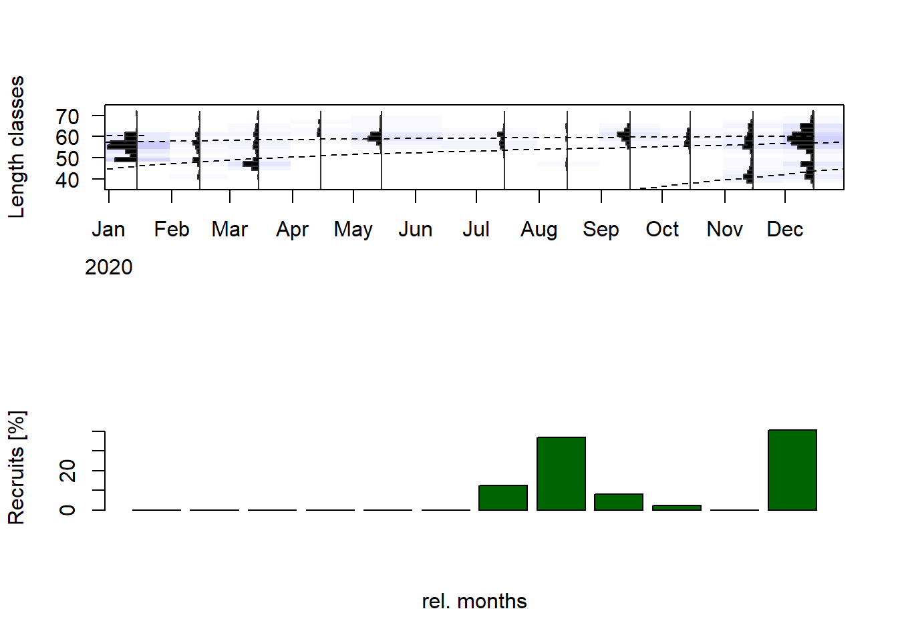
If no t0 is provided only relative recruitment pattern can be estimated.19.11 Length-based spawning potential ratio (LBSPR)
# estimation of M
Ms <- TropFishR::M_empirical(Linf = res_KScan$par$Linf,
K_l = res_KScan$par$K,
method = "Then_growth")
kaw.mod$M <- as.numeric(Ms)kaw.pars = new("LB_pars")myMature%>%
print()formula: Y = 1/1+exp-(A + B*X) Original Bootstrap (Median)
A -81.3653 -83.1864
B 1.6349 1.6699
L50 49.7685 49.7425
R2 - 0.9481 kawa %>%
# mutate(uzito = as.numeric(uzito)) %>%
# filter(code == "FRI" & fl < 60 & between(new.date, lubridate::dmy(010620), lubridate::dmy(311220))) %>%
dplyr::select(fl, species) %>%
group_by(species) %>%
ggpubr::get_summary_stats()# A tibble: 1 x 14
species variable n min max median q1 q3 iqr mad mean sd
<chr> <chr> <dbl> <dbl> <dbl> <dbl> <dbl> <dbl> <dbl> <dbl> <dbl> <dbl>
1 Kawakawa fl 1866 33 74 57 52 60 8 5.78 55.5 6.62
# ... with 2 more variables: se <dbl>, ci <dbl>## biological parameters
kaw.pars@Species = "Kawakawa"
kaw.pars@L_units = "cm"
kaw.pars@L50 = myMature$out %>% filter(between(fitted, 0.49,0.60)) %>% slice(1) %>% pull(x)
kaw.pars@L95 = myMature$out %>% filter(between(fitted, 0.93,0.971)) %>% slice(1) %>% pull(x)
kaw.pars@MK = kaw.mod$M/res_KScan$par$K
kaw.pars@Linf = res_KScan$par$Linf
## Exploitation parameters
kaw.pars@SL50 = catch.converted$L50
kaw.pars@SL95 = catch.converted$L95
kaw.pars@FM = 1.07#catch.converted$FM %>% as.numeric() %>% abs()
kaw.pars@BinWidth = 2
kaw.pars@BinMin = 33
kaw.pars@BinMax = 74
# kaw.parskaw.sim = kaw.pars %>%
LBSPRsim()kaw.sim %>% plotSim()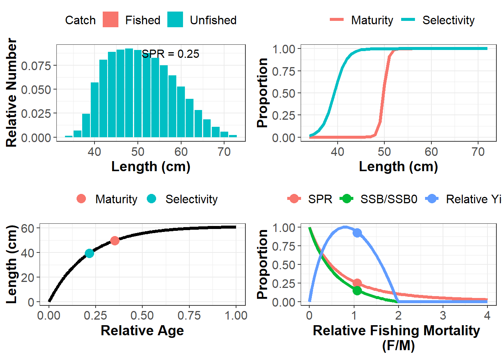
kaw.sim %>%
plotSim(lf.type = "pop")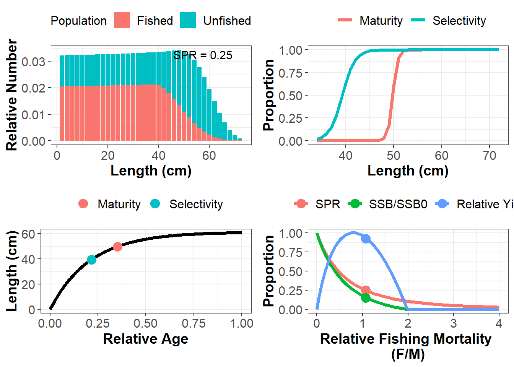
kaw.sim %>% plotSim(type = "growth")
kaw.sim %>% plotSim(type = "len.freq")
kaw.sim %>% plotSim(type = "yield.curve")tibble(Z = catch.converted$Z, K = catch.converted$K,MK = kaw.sim@MK,FM = kaw.sim@FM, t50 = catch.converted$t50, t95 = catch.converted$t95, L50 = kaw.sim@L50, L95 = kaw.sim@L95, SL50 = kaw.sim@SL50, SL95 = kaw.sim@SL95,Linf = kaw.sim@Linf, SPR = kaw.sim@SPR, yield = kaw.sim@Yield, YPR = kaw.sim@YPR, SSB = kaw.sim@SSB, SSB0 = kaw.sim@SSB0) %>%
pivot_longer(cols = 1:16) %>%
kableExtra::kbl(col.names = c("Reference", "Value")) %>%
kableExtra::kable_styling(latex_options = "hold_position")| Reference | Value |
|---|---|
| Z | 2.96e-01 |
| K | 1.42e+00 |
| MK | 9.63e-01 |
| FM | 1.07e+00 |
| t50 | 7.22e-01 |
| t95 | 8.58e-01 |
| L50 | 4.98e+01 |
| L95 | 5.13e+01 |
| SL50 | 3.93e+01 |
| SL95 | 4.31e+01 |
| Linf | 6.13e+01 |
| SPR | 2.49e-01 |
| yield | 1.41e+08 |
| YPR | 2.21e+04 |
| SSB | 5.90e+07 |
| SSB0 | 3.73e+04 |
References
Ahmadi, Mohammad Sadeq, Janez Sušnik, William Veerbeek, and Chris Zevenbergen. 2020. “Towards a Global Day Zero? Assessment of Current and Future Water Supply and Demand in 12 Rapidly Developing Megacities.” Sustainable Cities and Society 61: 102295.
Board, Ocean Studies, National Research Council, et al. 2010. Ocean Acidification: A National Strategy to Meet the Challenges of a Changing Ocean. National Academies Press.
Boettiger, Carl, Duncan Temple Lang, and Peter Wainwright. 2012. “Rfishbase: Exploring, Manipulating and Visualizing FishBase Data from r.” Journal of Fish Biology, November. https://doi.org/10.1111/j.1095-8649.2012.03464.x.
Bown, Natalie K, Tim S Gray, and Selina M Stead. 2013. “Co-Management and Adaptive Co-Management: Two Modes of Governance in a Honduran Marine Protected Area.” Marine Policy 39: 128–34.
Bradley, Darcy, Matt Merrifield, Karly M. Miller, Serena Lomonico, Jono R. Wilson, and Mary G. Gleason. 2019. “Opportunities to Improve Fisheries Management Through Innovative Technology and Advanced Data Systems.” Journal Article. Fish and Fisheries 20 (3): 564–83. https://doi.org/https://doi.org/10.1111/faf.12361.
Brey, Thomas, and Daniel Pauly. 1986. “Electronic Length Frequency Analysis: A Revised and Expanded User’s Guide to ELEFAN 0, 1 and 2.”
Campitelli, Elio. 2021. metR: Tools for Easier Analysis of Meteorological Fields. https://doi.org/10.5281/zenodo.2593516.
Dick, EJ, and Alec D MacCall. 2011. “Depletion-Based Stock Reduction Analysis: A Catch-Based Method for Determining Sustainable Yields for Data-Poor Fish Stocks.” Fisheries Research 110 (2): 331–41.
Gayanilo, FC, and Daniel Pauly. 1997. FAO-ICLARM Stock Assessment Tools: Reference Manual. Vol. 8. Food; Agriculture Organization of the United Nations Rome.
Goetz, Andrew R. 2019. “Transport Challenges in Rapidly Growing Cities: Is There a Magic Bullet?” Taylor & Francis.
Golden, Christopher D, Edward H Allison, William WL Cheung, Madan M Dey, Benjamin S Halpern, Douglas J McCauley, Matthew Smith, Bapu Vaitla, Dirk Zeller, and Samuel S Myers. 2016. “Nutrition: Fall in Fish Catch Threatens Human Health.” Journal Article. Nature News 534 (7607): 317.
Grolemund, Garrett, and Hadley Wickham. 2011. “Dates and Times Made Easy with lubridate.” Journal of Statistical Software 40 (3): 1–25. https://www.jstatsoft.org/v40/i03/.
Hilborn, Ray, Ricardo Oscar Amoroso, Christopher M Anderson, Julia K Baum, Trevor A Branch, Christopher Costello, Carryn L De Moor, et al. 2020. “Effective Fisheries Management Instrumental in Improving Fish Stock Status.” Proceedings of the National Academy of Sciences 117 (4): 2218–24.
Hordyk, Adrian. 2019. LBSPR: Length-Based Spawning Potential Ratio. https://CRAN.R-project.org/package=LBSPR.
Jackson, Jeremy BC, Michael X Kirby, Wolfgang H Berger, Karen A Bjorndal, Louis W Botsford, Bruce J Bourque, Roger H Bradbury, Richard Cooke, Jon Erlandson, and James A Estes. 2001. “Historical Overfishing and the Recent Collapse of Coastal Ecosystems.” Journal Article. Science 293 (5530): 629–37.
Jiao, Yan, Enric Cortés, Kate Andrews, and Feng Guo. 2011. “Poor-Data and Data-Poor Species Stock Assessment Using a Bayesian Hierarchical Approach.” Ecological Applications 21 (7): 2691–2708.
Mildenberger, Tobias K., Marc H. Taylor, and Matthias Wolff. 2017. “TropFishR: An r Package for Fisheries Analysis with Length-Frequency Data.” Methods in Ecology and Evolution 8 (11): 1520–27. https://doi.org/10.1111/2041-210X.12791.
Patil, Indrajeet. 2021. “Visualizations with statistical details: The ’ggstatsplot’ approach.” Journal of Open Source Software 6 (61): 3167. https://doi.org/10.21105/joss.03167.
Pauly, Daniel. 1981. “The Relationships Between Gill Surface Area and Growth Performance in Fish: A Generalization of von Bertalanffy’s Theory of Growth.”
———. 1982. “Studying Single-Species Dynamics in a Tropical Multispecies Context.” In Theory and Management of Tropical Fisheries. ICLARM Conference Proceedings, 9:33–70. 360. International Centre for Living Aquatic Resources Manila, Philippines.
Pebesma, Edzer. 2018. “Simple Features for R: Standardized Support for Spatial Vector Data.” The R Journal 10 (1): 439–46. https://doi.org/10.32614/RJ-2018-009.
Pedersen, Thomas Lin. 2020. Patchwork: The Composer of Plots. https://CRAN.R-project.org/package=patchwork.
Pierce, David. 2019. Ncdf4: Interface to Unidata netCDF (Version 4 or Earlier) Format Data Files. https://CRAN.R-project.org/package=ncdf4.
Pope, John G, Dave S Macdonald, Niels Daan, John D Reynolds, and Simon Jennings. 2000. “Gauging the Impact of Fishing Mortality on Non-Target Species.” ICES Journal of Marine Science 57 (3): 689–96.
Powell, David G. 1979. “Estimation of Mortality and Growth Parameters from the Length Frequency of a Catch [Model].” Rapports Et Proces-Verbaux Des Reunions (Denmark).
Punt, André E, Michael G Dalton, Wei Cheng, Albert J Hermann, Kirstin K Holsman, Thomas P Hurst, James N Ianelli, et al. 2021. “Evaluating the Impact of Climate and Demographic Variation on Future Prospects for Fish Stocks: An Application for Northern Rock Sole in Alaska.” Deep Sea Research Part II: Topical Studies in Oceanography 189: 104951.
Punt, André E, David C Smith, and Anthony DM Smith. 2011. “Among-Stock Comparisons for Improving Stock Assessments of Data-Poor Stocks: The ‘Robin Hood’ Approach.” ICES Journal of Marine Science 68 (5): 972–81.
R Core Team. 2020. R: A Language and Environment for Statistical Computing. Vienna, Austria: R Foundation for Statistical Computing. https://www.R-project.org/.
Semba, Masumbuko, and Nyamisi Peter. 2020. Wior: Easy Tidy and Process Oceanographic Data.
Shen, Xinqiang, K Richardson, E Nielsen, S Mellergaard, and Charlotten1und Cast1e. n.d. “International Council for the Exploration of the Seas.”
Torrejon-Magallanes, Josymar. 2020. sizeMat: Estimate Size at Sexual Maturity. https://CRAN.R-project.org/package=sizeMat.
Wetherall, JA, JJ Polovina, and S Ralston. 1987. “Estimating Growth and Mortality in Steady-State Fish Stocks from Length-Frequency Data.” In ICLARM Conf. Proc, 13:53–74.
Wickham, Hadley. 2016. Ggplot2: Elegant Graphics for Data Analysis. Springer-Verlag New York. https://ggplot2.tidyverse.org.
———. 2021. Tidyr: Tidy Messy Data. https://CRAN.R-project.org/package=tidyr.
Wickham, Hadley, and Jennifer Bryan. 2019. Readxl: Read Excel Files. https://CRAN.R-project.org/package=readxl.
Wickham, Hadley, Romain François, Lionel Henry, and Kirill Müller. 2021. Dplyr: A Grammar of Data Manipulation. https://CRAN.R-project.org/package=dplyr.
Wickham, Hadley, and Jim Hester. 2020. Readr: Read Rectangular Text Data. https://CRAN.R-project.org/package=readr.
Xie, Yihui. 2014. “Knitr: A Comprehensive Tool for Reproducible Research in R.” In Implementing Reproducible Computational Research, edited by Victoria Stodden, Friedrich Leisch, and Roger D. Peng. Chapman; Hall/CRC. http://www.crcpress.com/product/isbn/9781466561595.
———. 2016. Bookdown: Authoring Books and Technical Documents with R Markdown. Boca Raton, Florida: Chapman; Hall/CRC. https://bookdown.org/yihui/bookdown.
Xie, Yihui, Christophe Dervieux, and Emily Riederer. 2020. R Markdown Cookbook. Boca Raton, Florida: Chapman; Hall/CRC. https://bookdown.org/yihui/rmarkdown-cookbook.
Zhu, Hao. 2021. kableExtra: Construct Complex Table with ’Kable’ and Pipe Syntax. https://CRAN.R-project.org/package=kableExtra.